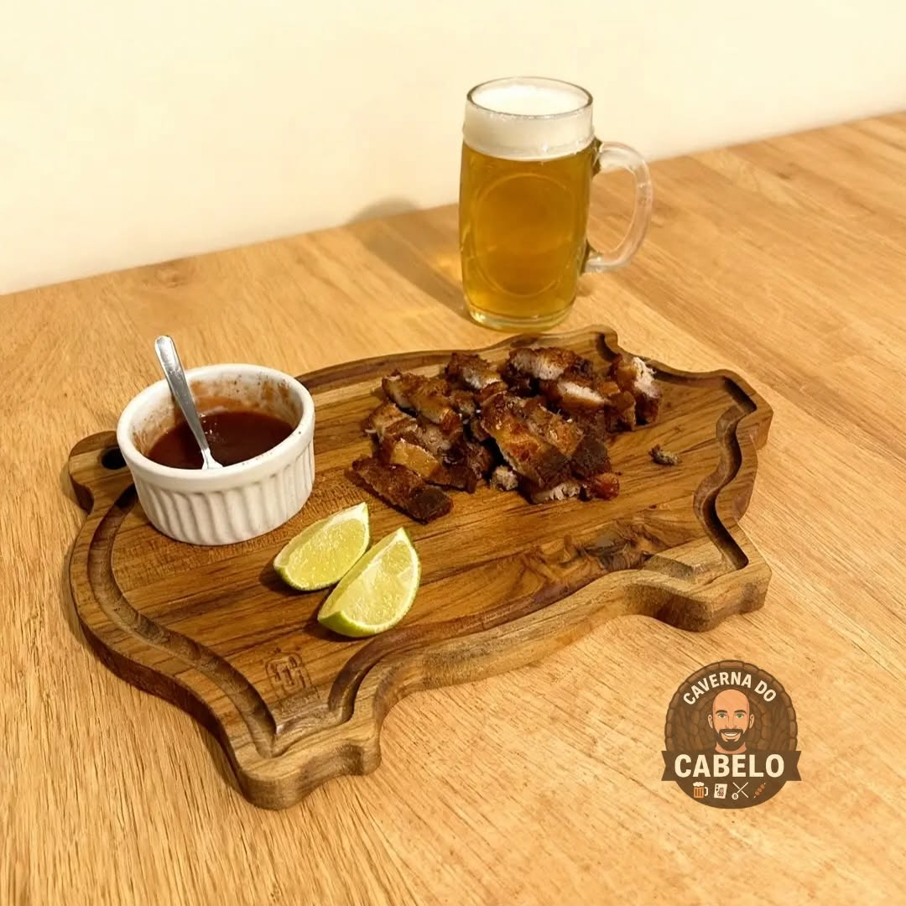
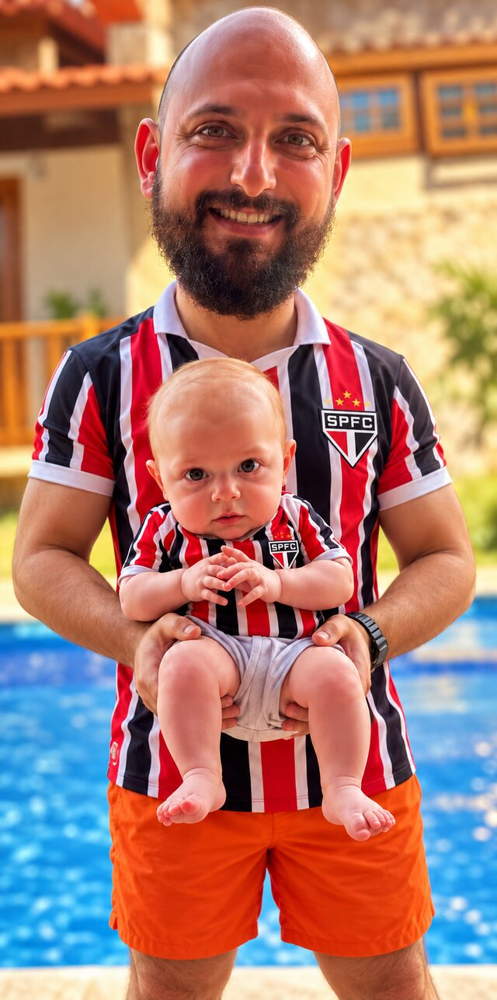
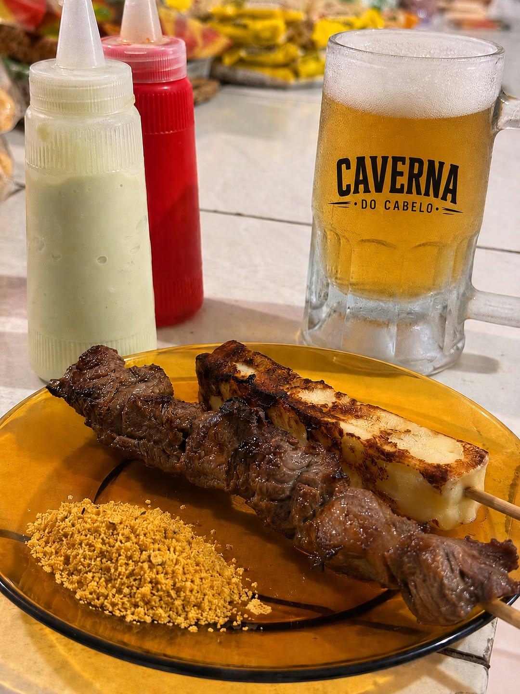
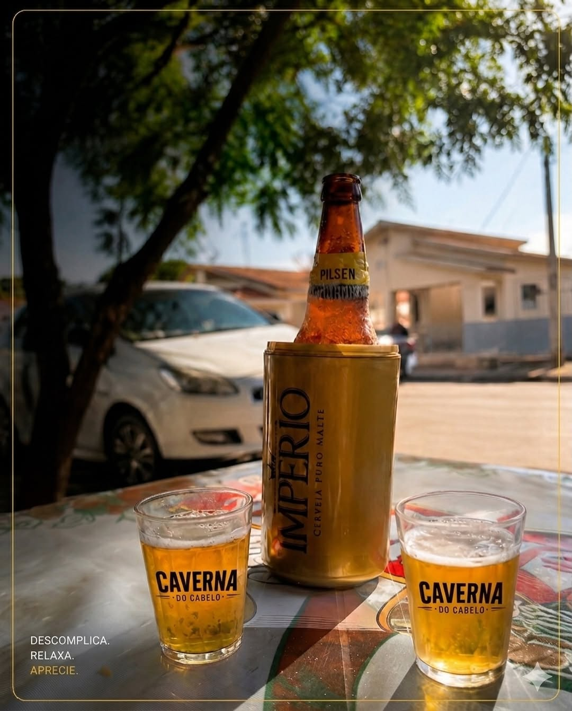
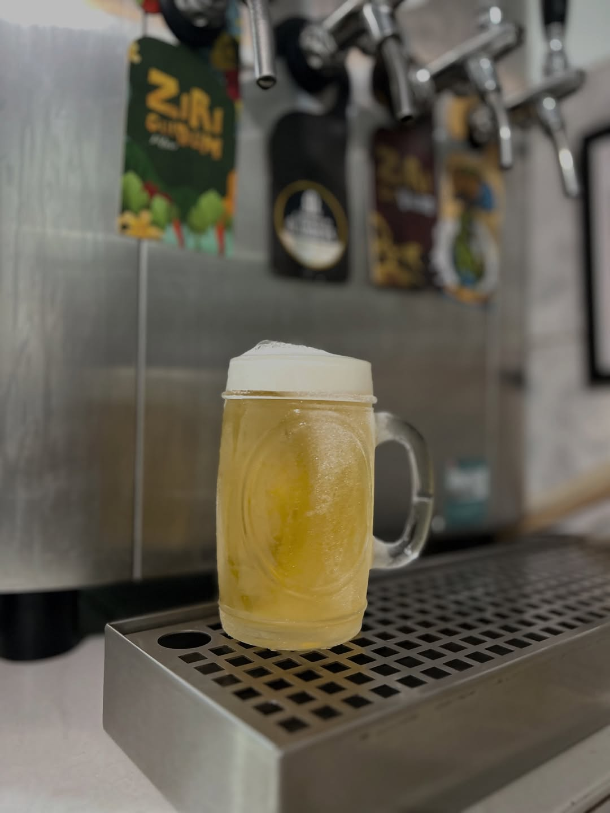

Espetinho
Carne selecionada, feita na brasa, no ponto que já rendeu fama pra Caverna. É o motivo de muita gente atravessar a cidade pra vir aqui.

Na Caverna do Cabelo tem espetinho no capricho, sinuca disputada e resenha garantida do primeiro ao último gol.
Rua Professora Sônia Maria Campagnone, 466, Lucélia-SP
Aqui o boteco é feito pra ficar. Sempre tem jogo passando: Brasileirão em peso, clássico de futebol americano, jogo de basquete, e quando rola Champions League ou é dia de Seleção Brasileira jogando Copa do Mundo, a casa lota e a torcida vira uma só.
Enquanto o jogo não começa (ou no intervalo, ou depois, vamos ser sinceros), a mesa de sinuca tá sempre disputada. Chama a turma, taca a bola e aproveita pra zoar o time do amigo do lado.
Resenha aqui não é força de expressão: é o que acontece toda vez que a bola rola e o chopp desce.

Arquiteto de formação, natural de Barretos-SP. Hoje vive em Lucélia com a esposa Renata e o filho José, e é ele quem cuida de cada detalhe da casa.
Sempre pronto pra te receber com uma caneca de chopp trincando e aquele espetinho selecionado que você só encontra aqui.



A gente já separou o lugar na mesa perto do jogo. Só falta você chegar.
Rua Professora Sônia Maria Campagnone, 466, Lucélia-SP
Traçar rota até a Caverna do CabeloColoca o endereço no mapa do seu celular e segue a rota. É rapidinho, e o chopp já vai estar gelado quando você chegar.